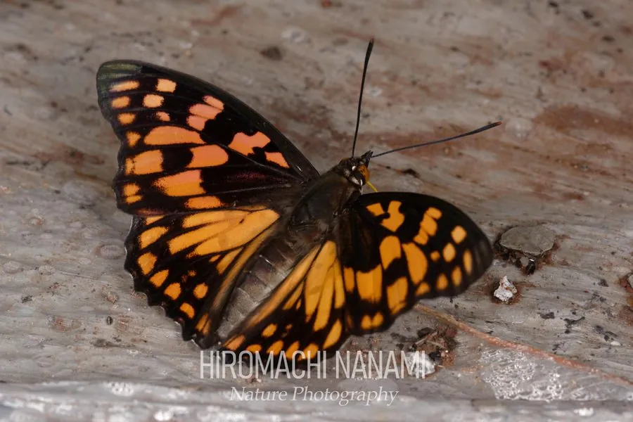

昆虫 · 动物界
黄帅蛱蝶 Sephisa princeps

翅面黑底缀橙黄斑块的中型蛱蝶，雄蝶常在树梢和溪边抢占领域，是中国南方山地森林中颇具观赏性的蝴蝶。
- 分类
- 门节肢动物门纲昆虫纲目鳞翅目科蛱蝶科属帅蛱蝶属
- 栖息环境
- 山地森林的林缘、溪谷和阔叶林
- 地理分布
- 中国南方，以及日本、朝鲜
- 保护级别
- 暂无评估
物种志
黄帅蛱蝶成虫翅展 60–70 mm。雄蝶翅面黑褐色，前翅和后翅缀有橙黄至金黄色的斑块，在阳光下十分醒目；雌蝶体色较暗，翅面黑褐，具白色或淡黄色的带纹，与雄蝶差别很大。翅反面呈褐色，有细密的波状纹。
黄帅蛱蝶分布于中国南方以及日本、朝鲜，生活在山地森林的林缘、溪谷和阔叶林中。雄蝶有强烈的领域行为，常停在树梢或溪边的石头上，见到其他蝴蝶飞过便起飞驱赶，然后回到原处。成虫喜欢吸食树汁、腐果和花蜜，也常到溪边吸水。幼虫取食栎类等壳斗科植物的叶片。黄帅蛱蝶一年发生 1 代，以幼虫或蛹越冬，成虫在夏季出现。它因雄蝶鲜明的橙黄斑纹而受到蝴蝶观察者的喜爱，森林栖息地的保护对其种群十分重要。
形态与习性
- 食性成虫吸食树汁、腐果和花蜜，幼虫取食栎类
- 翅展60–70 mm
- 雌雄差异雄蝶橙黄斑块醒目，雌蝶黑褐带白纹
- 领域性雄蝶停在树梢和溪边驱赶入侵者
- 世代一年 1 代，以幼虫或蛹越冬
- 栖息地山地阔叶林和溪谷
趣味知识
- 黄帅蛱蝶的雌雄差别很大，雌蝶常被误认成另一个物种。
- 雄蝶会守在溪边石头上，把飞过的其他蝴蝶赶走。
- 它喜欢吸食栎树流出的树汁，常在树干上停留很久。